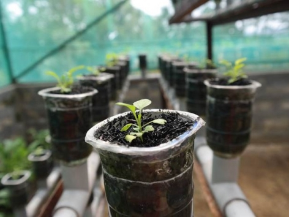

Sistem pertanian modern saat ini dapat dibagi menjadi tiga hal, yakni penelitian benih unggul, penggunaan teknologi yang canggih, dan penggunaan bahan kimia. Sementara itu, contoh penerapan pertanian modern yang perlu dikembangkan di Indonesia adalah pertanian organik terintegrasi. Pertanian yang menggunakan sistem budidaya pertanian ini hanya mengandalkan bahan-bahan alami tanpa menggunakan bahan kimia sintetis yang berbahaya. Pertanian ini akan terintegrasi dengan peternakan. Pupuk yang digunakan merupakan pupuk organik yang dihasilkan dari limbah peternakan. Sementara itu, dauun-daun dari pertanian pascapanen digunakan untuk pakan ternak. Tentu saja, semua itu diolah menggunakan teknologi pertanian yang modern namun mudah. Di Bali, sistem pertanian ini sudah berjalan lancar dan disebut Simantri (Sistem Pertanian Terintegrasi). Petani Simantri mampu membuat pupuk organik dan pestisida sendiri, semuanya organik. Mereka juga mendapat pelatihan berkala dari pemerintah. Budidaya organik dapat digunakan untuk membatasi kemungkinan dampak negatif yang ditimbulkan oleh budidaya kimiawi. Dengan memanfaatkan pupuk organik, keunggulan nyata dapat dirasakan dibanding dengan pupuk kimia. Pupuk organik adalah keluaran dari setiap budidaya pertanian sehingga sumber unsur hara makro dan mikro dapat dikatakan cuma-cuma yang berdaya amliorasi ganda, dengan bermacam-macam proses yang saling mendukung. Hal ini bekerja menyuburkan tanah sekaligus mengonservasikan dan menyehatkan ekosistem tanah, serta menghindarkan kemungkinan terjadinya pencemaran lingkungan. Berikut ini sistem pertanian modern yang bisa digunakan Indonesia.
Pertanian hidroponik adalah pertanian yang menggunakan cara budidaya dengan memanfaatkan air tanpa menggunakan tanah dengan menekankan pada pemenuhan kebutuhan nutrisi bagi tanaman. Biasanya air yang digunakan sudah dicampur dengan nutrisi untuk tanaman, cara ini sangat mudah dan tidak perlu memakan lahan yang luas.